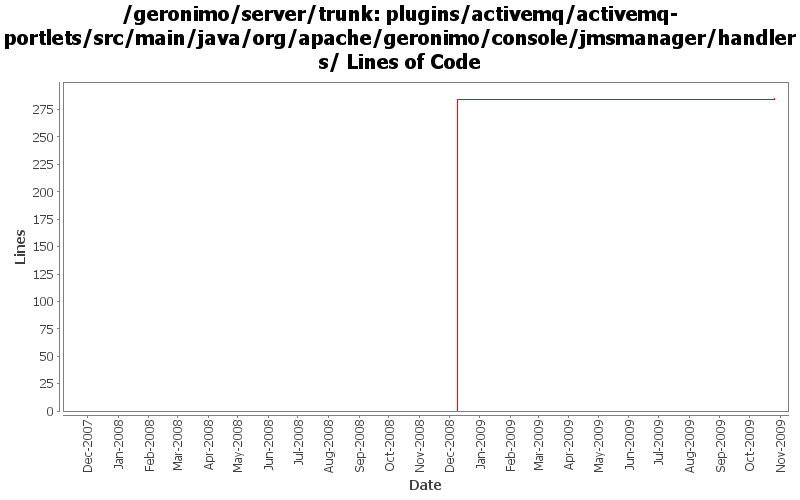

[root]/plugins/activemq/activemq-portlets/src/main/java/org/apache/geronimo/console/jmsmanager/handlers

| Author | Changes | Lines of Code | Lines per Change |
|---|---|---|---|
| Totals | 18 (100.0%) | 312 (100.0%) | 17.3 |
| dwoods | 9 (50.0%) | 302 (96.8%) | 33.5 |
| jdillon | 4 (22.2%) | 6 (1.9%) | 1.5 |
| xuhaihong | 1 (5.6%) | 4 (1.3%) | 4.0 |
| gdamour | 4 (22.2%) | 0 (0.0%) | 0.0 |
Cleanup some codes in the ActiveMQ plug-in
4 lines of code changed in 1 file:
GERONIMO-4337 rename AMQ5 modules to old names that apps expect
293 lines of code changed in 3 files:
GERONIMO-4337 rename AMQ5 modules to old names that apps expect
0 lines of code changed in 3 files:
GERONIMO-4337 remove old AMQ4 based modules
9 lines of code changed in 3 files:
(GERONIMO-3985) Use SLF4J as the primary logging facade for Geronimo
6 lines of code changed in 4 files:
When distributing w/o the explicit selection of a target, we only distribute
to the first target returned by DeploymentManager. This first target is
the default target, or configuration store, and users can specify an abstract
name query (in EditableKernelConfigurationManager) to identify this default
target.
Now that multiple configuration stores per server are better handled
out-of-the-box, we can re-enable the "clustered" configuration stores.
Also, let's more the rmock dependency to testsupport-common so that we
can use it from all our tests.
This fixes GERONIMO-3612 - When no target configuration store is explicitly
specified while installing a configuration, the configuration should be
installed to a default configuration store
0 lines of code changed in 4 files: